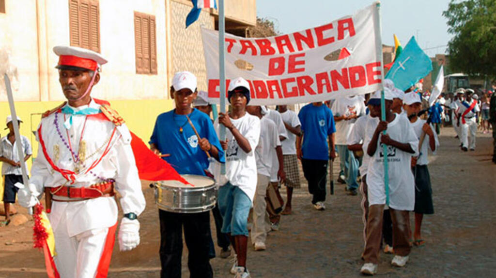

Tabanka
Tabanka é uma tradição cultural de Cabo Verde que mistura música, dança, espiritualidade e solidariedade. Tem raízes afro-cristãs e é muito comum em cidades como Assomada e Cidade Velha, especialmente na ilha de Santiago.
As festas de Tabanka ocorrem geralmente entre maio e julho e incluem desfiles com tambores, trajes coloridos, cantos rituais e muita alegria. Além do seu valor cultural, a Tabanka é também um símbolo de resistência e preservação da herança africana no arquipélago.